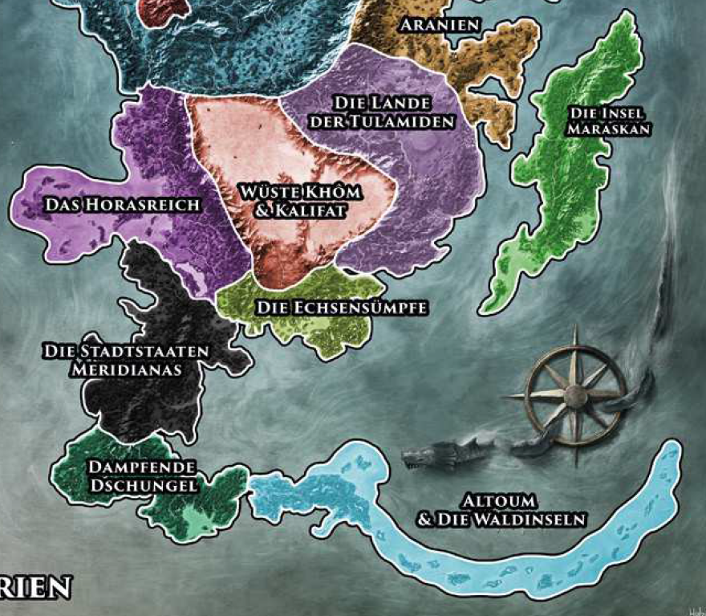

Den Südzipfel der Kontinents entlang zieht sich über 6.000 Schritt hohe Regengebirge, dessen Hänge ebenso wie die Niederungen östlich und westlich des Massivs von dichten Dschungel bedeckt sind. 
Wer hier überleben will, wo gigantische Würgeschlangen lautlos herangleiten, Krokodile im seichten Wasser lauern, Giftvipern nachts unter Decken und in Stiefeln kriechen und wo sich mächtige Säbelzahntiger auf den einsamen Wanderer stürzen, der braucht Mut und muss mit den Pflanzen und Tieren dieser Wildnis bestens vertraut sein. Die besten Lehrmeister für solche Kenntnisse sind die hier lebenden Waldmenschen, die nach dem Namen ihres größten Stammes oft Mohas genannt werden. Die kupferhäutigen, recht kleinen, aber überaus agilen Wildnisbewohner möchten mit den "Blasshäuten" häufig jedoch nichts zu schaffen haben und setzen sich entschieden gegen Eindringlinge in ihr Stammesgebiet zur Wehr.